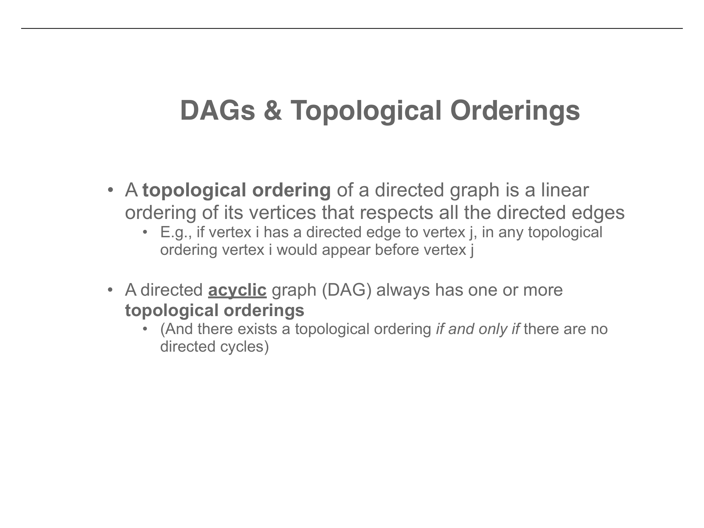
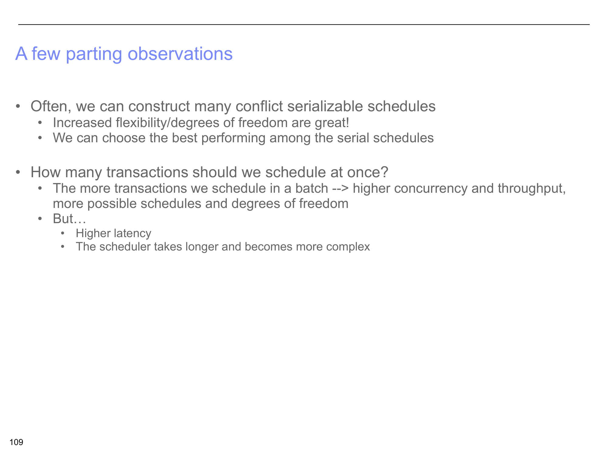

Concurrency, Scheduling, and Conflict Serializability
Why interleaving transactions is dangerous, and how conflict graphs keep us safe
1. Why Concurrent Transactions?
So far in this course, we have seen how Write-Ahead Logging (WAL) gives us Atomicity and Durability — two of the four ACID properties. But there is a massive, practical problem we have not yet addressed: real databases serve many users simultaneously. Think about a banking system processing thousands of transfers per second, or an airline reservation system handling bookings from around the world. We simply cannot run transactions one at a time, waiting for each to finish before starting the next. That would be catastrophically slow.
This brings us to the Isolation property of ACID. We need to interleave operations from different transactions for performance, but we must do so in a way that produces correct results — as if the transactions had run one at a time.
The Bank Transfer Example
Let us make this concrete with the classic bank example. We have two accounts:
- Account A starts with $50
- Account B starts with $200
And two transactions that need to run:
T1: Transfer $50 from A to B
read(A)
A = A - 50
write(A)
read(B)
B = B + 50
write(B)
T2: Apply 6% Interest to A and B
read(A)
A = A * 1.06
write(A)
read(B)
B = B * 1.06
write(B)
What happens if we run them one at a time?
Serial Order 1: T1 then T2
After T1: A = $0, B = $250
After T2: A = $0 * 1.06 = $0, B = $250 * 1.06 = $265
Total = $265
Serial Order 2: T2 then T1
After T2: A = $50 * 1.06 = $53, B = $200 * 1.06 = $212
After T1: A = $53 - $50 = $3, B = $212 + $50 = $262
Total = $265
The problem appears when we interleave operations from T1 and T2 carelessly. Some interleavings produce results (like A = $3, B = $265, total = $268) that do not match any serial order. Money has appeared from nowhere — the database is now in an inconsistent state.

2. Schedules — Serial vs. Interleaved
The key constraint on a schedule is that it must preserve each transaction's internal ordering. If T1 says "read A, then write A, then read B," every schedule must keep those T1 operations in that order. But operations from different transactions can be placed anywhere relative to each other.
Serial Schedule
Transactions execute one at a time with no interleaving. All of T1's operations finish before any of T2's begin (or vice versa).
Always correct, but potentially very slow. If T1 is waiting for a disk read, the CPU sits idle instead of doing useful work for T2.
Interleaved Schedule
Operations from different transactions are mixed together. T1 might do a read, then T2 does a write, then T1 continues.
May or may not be correct. Some interleavings produce the same result as a serial schedule; others do not.

Schedule A vs. Schedule B
The lecture demonstrates this with two specific interleaved schedules, both using A = $50, B = $200 with the same T1 (transfer) and T2 (interest):
Schedule A (Good Interleaving)
The interleaving happens to produce the exact same final state as the serial order T1 then T2: A = $0, B = $265.
This schedule is serializable — even though operations were interleaved, the outcome is indistinguishable from a serial execution.
Schedule B (Bad Interleaving)
The interleaving produces a final state that does not match T1→T2 or T2→T1. For example, A = $3, B = $265, total = $268.
This schedule is NOT serializable — no serial execution could ever produce this result. Money was created from nothing.

The lecture walks through schedules S1 through S6 to build intuition for which interleavings are safe and which are not. The takeaway: you cannot just eyeball a schedule and tell whether it is serializable. We need a systematic method, which is exactly what conflict serializability provides.
3. Conflicts and Anomalies
Before we can define conflict serializability, we need to precisely understand what a conflict is. The general model is simple: transactions perform r(X) (read item X) and w(X) (write item X) operations on data items.
- They belong to different transactions
- They access the same data item
- At least one of them is a write
This gives us exactly three types of conflicts:
| Conflict Type | Operations | Intuition |
|---|---|---|
| Read-Write (RW) | Ti reads X, then Tj writes X | Ti's read value depends on whether it happens before or after Tj's write. Swapping the order changes what Ti sees. |
| Write-Read (WR) | Ti writes X, then Tj reads X | Tj reads the value Ti wrote. If we swap the order, Tj reads the old value instead. The outcome changes. |
| Write-Write (WW) | Ti writes X, then Tj writes X | The final value of X is whatever was written last. Swapping the order changes which write "wins." |
What about Read-Read?
Two reads on the same item from different transactions are NOT a conflict. Reads do not change data, so the order in which two reads happen has no effect on the outcome. You can swap them freely without changing anything. This is why the definition requires "at least one is a write."

Conflicts vs. Anomalies: A Crucial Distinction
This is a subtle but important point that the lecture emphasizes:
Conflict
A potential problem. Two operations that could cause issues depending on their relative ordering. A conflict is a structural property of the schedule — it identifies pairs of operations where order matters.
Anomaly
An actual problem. A conflict that, given the specific ordering in the schedule, leads to an incorrect or non-serializable result. An anomaly is what happens when a conflict goes wrong.

Why does this distinction matter?
Because conflict serializability works by reasoning about conflicts — not by checking whether anomalies actually occurred. This makes it conservative: it may reject some schedules that would actually produce correct results (because the conflicts did not happen to cause anomalies in that particular case). But it never accepts a schedule that produces incorrect results. This is a deliberate engineering tradeoff — safety over maximum concurrency.
4. Conflict Serializability
Now we reach the core question: given an interleaved schedule, how do we determine if it is serializable?
One approach would be to test general serializability: check whether the schedule produces the same result as some serial schedule for every possible initial database state. But this is completely impractical — there are infinitely many possible initial states. We need a different approach.
Swapping adjacent non-conflicting operations one at a time is tedious. Fortunately, there is an elegant equivalent test:
The Key Theorem
A schedule is conflict serializable if and only if its conflict graph (also called a serialization graph or precedence graph) is acyclic. This transforms the problem from "try all possible swap sequences" into "check a graph for cycles" — which is fast and mechanical.
Building a Conflict Graph
The conflict graph captures the ordering constraints that conflicts impose. Here is how to build one:
If your schedule involves transactions T1, T2, and T3, draw three nodes.
For every pair of conflicting operations, draw an edge from the transaction whose operation comes first in the schedule to the transaction whose operation comes second. The edge means: "in any equivalent serial schedule, this transaction must come before that one."
If the graph has no cycles, the schedule is conflict serializable. If there is any cycle, it is NOT conflict serializable.

Why do cycles mean non-serializability?
A cycle like T1 → T2 → T1 means: "T1 must come before T2 (because of some conflict), AND T2 must come before T1 (because of some other conflict)." This is a logical contradiction — T1 cannot be both before and after T2 in a serial schedule. It is like saying "I must finish breakfast before lunch, and I must finish lunch before breakfast." No linear ordering satisfies both constraints.
Conversely, if there are no cycles, all the ordering constraints are compatible, and we can find at least one serial ordering that respects all of them.
Acyclic (Good)
T1 → T2 → T3
No cycles. Equivalent serial order: T1, T2, T3. The schedule is conflict serializable.
Cyclic (Bad)
T1 → T2 → T1 (cycle!)
Cycle detected. No serial ordering can satisfy both T1-before-T2 and T2-before-T1. NOT conflict serializable.

5. DAGs and Topological Orderings
When a conflict graph has no cycles, we have established that the schedule is conflict serializable. But which serial schedule is it equivalent to? This is where topological ordering comes in.
A topological ordering of the conflict graph gives us the equivalent serial schedule. The transactions should be executed in this order to produce the same result as the interleaved schedule.
Algorithm for Topological Sort
This node has no transaction that must precede it. It can safely go first.
Also remove all of its outgoing edges, since the constraints involving this node are now satisfied.
Each iteration, pick any node with no remaining incoming edges. If at any point no such node exists (but nodes remain), the graph has a cycle and topological sort is impossible.
Is the topological ordering unique?
Not necessarily. If at any step there are multiple nodes with no incoming edges, you can pick any of them. Different choices lead to different (but equally valid) topological orderings. This means there may be multiple equivalent serial schedules, and the interleaved schedule is equivalent to all of them.

Connecting It All Together
Here is the complete pipeline for determining whether an interleaved schedule is safe:
- Identify all conflicts in the schedule (pairs of operations from different transactions on the same item where at least one is a write)
- Build the conflict graph (nodes = transactions, edges = conflict orderings)
- Check for cycles — if there is a cycle, the schedule is NOT conflict serializable, and the DBMS must abort one of the transactions and retry
- If acyclic, perform a topological sort to find the equivalent serial schedule(s)
This is exactly what real database systems do (conceptually) to ensure the Isolation property of ACID.
6. Worked Example — Five Transactions
Let us walk through the complete example from the lecture to cement the process. We have five transactions and the following interleaved schedule:
w1(A), r2(A), w1(B), w3(C), r2(C), r4(B), w2(D), w4(E), r5(D), w5(E)
Our goal: determine whether S1 is conflict serializable, and if so, find an equivalent serial schedule.
Systematically go through each data item and find pairs of operations from different transactions where at least one is a write:
| Data Item | Operation 1 | Operation 2 | Type | Edge |
|---|---|---|---|---|
| A | w1(A) |
r2(A) |
WR | T1 → T2 |
| B | w1(B) |
r4(B) |
WR | T1 → T4 |
| C | w3(C) |
r2(C) |
WR | T3 → T2 |
| D | w2(D) |
r5(D) |
WR | T2 → T5 |
| E | w4(E) |
w5(E) |
WW | T4 → T5 |
Notice: all five data items (A, B, C, D, E) contribute exactly one conflict each in this example. In general, a single data item can produce multiple conflicts if many transactions access it.
Nodes: T1, T2, T3, T4, T5
Edges (from the conflicts identified above):
- T1 → T2 (because of
w1(A)beforer2(A)) - T1 → T4 (because of
w1(B)beforer4(B)) - T3 → T2 (because of
w3(C)beforer2(C)) - T2 → T5 (because of
w2(D)beforer5(D)) - T4 → T5 (because of
w4(E)beforew5(E))
Let us trace all possible paths:
- From T1: T1 → T2 → T5 (dead end). T1 → T4 → T5 (dead end).
- From T3: T3 → T2 → T5 (dead end).
- From T2: T2 → T5 (dead end).
- From T4: T4 → T5 (dead end).
- From T5: no outgoing edges.
No path ever leads back to a node we already visited. The graph is ACYCLIC. Therefore, schedule S1 is conflict serializable.
Apply the topological sort algorithm:
- Iteration 1: Nodes with no incoming edges: T1, T3. Pick T3. Remove T3 and edge T3 → T2.
- Iteration 2: Nodes with no incoming edges: T1. Pick T1. Remove T1 and edges T1 → T2, T1 → T4.
- Iteration 3: Nodes with no incoming edges: T2, T4. Pick T4. Remove T4 and edge T4 → T5.
- Iteration 4: Nodes with no incoming edges: T2. Pick T2. Remove T2 and edge T2 → T5.
- Iteration 5: Only T5 remains. Pick T5.
One valid topological ordering: T3, T1, T4, T2, T5
But this is not the only one! If in iteration 1 we had picked T1 first, and in iteration 3 picked T2 first, we would get T1, T3, T2, T4, T5. Both are valid equivalent serial schedules for S1.

What if the graph HAD a cycle?
If we found a cycle — say T1 → T2 → T4 → T1 — then no topological ordering exists and the schedule is not conflict serializable. In practice, the DBMS would detect this situation and abort one of the transactions involved in the cycle. The aborted transaction is rolled back (using the WAL undo mechanisms from earlier lectures) and retried later. Choosing which transaction to abort is called the victim selection problem, and different systems use different strategies (youngest transaction, one with the least work done, etc.).
Summary
- ✓ Concurrent transactions are essential — databases serve many users, and serial execution is too slow. Interleaving gives us performance.
- ✓ Schedules can be serial or interleaved — serial schedules are always correct but slow; interleaved schedules may or may not be correct.
- ✓ A serializable schedule is one whose result matches some serial schedule. This is the correctness standard.
- ✓ Conflicts arise when two operations from different transactions access the same data item and at least one is a write (RW, WR, or WW).
- ✓ Conflicts are potential problems; anomalies are actual problems. Not every conflict causes an anomaly, but every anomaly comes from a conflict.
- ✓ Conflict serializability is tested via conflict graphs: nodes = transactions, edges = conflict orderings.
- ✓ Acyclic conflict graph = safe. Topological sort gives the equivalent serial ordering.
- ✓ Cyclic conflict graph = unsafe. The DBMS must abort a transaction to break the cycle.
